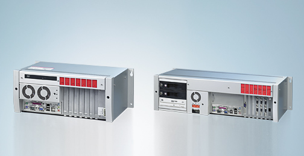

Een control cabinet PC is de desktop variant van een Panel PC. Hier treffen we geen touchscreen interface aan maar in ruil daarvoor krijgen we een systeem waarbij ingezet wordt op beschikbaarheid. Dit laatste mag je heel ruim interpreteren.
Eerst en vooral hebben we het over de hardware. Er wordt doelbewust gekozen voor componenten die door de fabrikant nog lang ondersteund zullen worden. Hierdoor is de hardware soms iets minder recent maar is er wel bijna gegarandeerd nog een wisselstuk beschikbaar.
Die hardware kan in tegenstelling tot een Panel PC ook makkelijk vervangen worden. Zoals je ziet op de foto zijn alle componenten vanaf het frontpaneel toegankelijk. Wanneer er een defect optreedt kan de hardware dan ook direct gewisseld worden.

Net zoals de vorige systemen is ook dit systeem bedoeld om te werken als een SOFT PLC met software zoals TwinCAT of CODESYS. Wat de interface naar de gebruiker toe betreft zijn er natuurlijk USB poorten en VGA of DVI uitgangen beschikbaar.